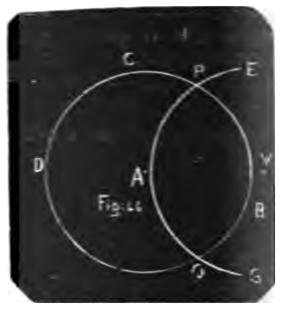
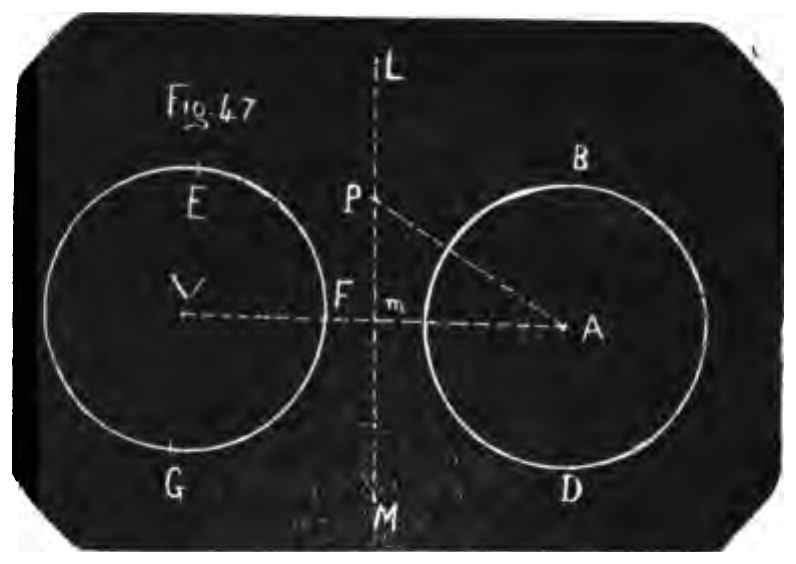

§ 110: Line–Circle Intersection (Non-Diametral)¶
BOOK SEVEN
ON THE INTERSECTION OF STRAIGHT LINES WITH CIRCULAR ARCS AND WITH ONE ANOTHER
110. Given two points \(L\) and \(M\) (fig. 46) of a straight line, and the center \(A\) with radius \(AB\) of an arc \(BCD\): to find the two points \(P\) and \(Q\), in which \(LM\) cuts the said arc, if indeed it cuts it.
Solution. With the two points \(L\) and \(M\) given on the straight line taken as centers, and with their respective distances \(MA\), \(LA\) from the given center taken as radii, describe two arcs intersecting at \(V\). With center \(V\) and the given radius \(AB\), describe an indefinite arc \(EFG\). If this cuts the given arc at \(P\) and \(Q\), these two points will be those sought. If it should not cut it, neither would the straight line \(LM\) cut the given arc.
Demonstration. Since the four distances \(AP\), \(AQ\), \(VP\), \(VQ\) are equal to one another, and the two \(AM\), \(VM\) are equal to each other, the three points \(P, M, Q\) will lie on the same straight line (§ 13). In the same manner it is demonstrated that the three points \(Q, P, L\) lie on the same straight line. Hence the straight line \(LM\) passes through \(P\) and \(Q\), whenever these points of intersection exist.


If the circle \(EFG\) described with radius \(AB\) (fig. 47) and center \(V\) should not cut the circle \(BCD\), \(LM\) would not cut this same circle. For if we conceive the straight line \(VA\) cutting the circles at \(C\) and \(F\), and \(CF\) bisected at \(m\), we shall have \(Vm = mA\). Therefore \(LM\) will cut \(VA\) perpendicularly at \(m\) (§ 14) outside the circle \(BCD\). If any other point \(P\) is taken on the straight line \(LM\), in the right triangle \(PmA\) the side \(PA\) will be greater than \(mA\), because opposite to a greater angle (I.32 and 18). Therefore point \(P\) will lie much further outside the circle than point \(m\). Hence at no point will the straight line \(LM\) cut the circle \(BCD\).

